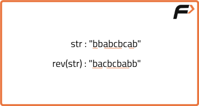

Longest Palindromic Subsequence | (DP-28)
Problem Statement:
Given a string, Find the longest palindromic subsequence length in given string.
A palindrome is a sequence that reads the same backwards as forward.
A subsequence is a sequence that can be derived from another sequence by deleting some or no elements without changing the order of the remaining elements.
Examples
Example 1: Input: s = "eeeme" Output: 4 Explanation: The longest palindromic subsequence is "eeee", which has a length of 4. Example 2: Input: s = "annb" Output: 2 Explanation: The longest palindromic subsequence is "nn", which has a length of 2.
Disclaimer: Here is the practice link to help you assess your knowledge better. It's highly recommend trying to solve it before looking at the solution.
Tabulation Approach
Algorithm
- We are given a string
sand need to find the longest palindromic subsequence. - To solve this, first, make a copy of the string
sand store it ast. - Next, reverse the original string
sto gets'. - The problem now becomes finding the longest common subsequence (LCS) between the string
sand its reverses'. - Using dynamic programming, we can compute the LCS of the two strings. The LCS between
sands'will give us the longest palindromic subsequence ofs. - Finally, the length of the LCS is the length of the longest palindromic subsequence in the original string
s.
Code
#include <bits/stdc++.h>
using namespace std;
class Solution{
private:
/* Function to calculate the length of
the Longest Palindromic Subsequence*/
int func(string s1, string s2) {
int n = s1.size();
int m = s2.size();
// Declare a 2D DP array to store length of the LCS
vector<vector<int>> dp(n + 1, vector<int>(m + 1, -1));
// Initialize first row and first column to 0
for (int i = 0; i <= n; i++) {
dp[i][0] = 0;
}
for (int i = 0; i <= m; i++) {
dp[0][i] = 0;
}
// Fill in the DP array
for (int ind1 = 1; ind1 <= n; ind1++) {
for (int ind2 = 1; ind2 <= m; ind2++) {
if (s1[ind1 - 1] == s2[ind2 - 1])
dp[ind1][ind2] = 1 + dp[ind1 - 1][ind2 - 1];
else
dp[ind1][ind2] = max(dp[ind1 - 1][ind2], dp[ind1][ind2 - 1]);
}
}
// The value at dp[n][m] contains length of the LCS
return dp[n][m];
}
public:
/* Function to calculate the length of
the Longest Palindromic Subsequence*/
int longestPalinSubseq(string s){
// Store a reversed copy of the string
string t = s;
reverse(s.begin(), s.end());
/* Call the LCS function to find the
length of the Longest Common Subsequence*/
return lcs(s, t);
}
};
int main() {
string s = "bbabcbcab";
//Create an instance of Solution class
Solution sol;
// Print the result
cout << "The Length of Longest Palindromic Subsequence is " << sol.longestPalinSubseq(s);
return 0;
}Complexity Analysis
Time Complexity: O(N * M), where N is the length of the string and M is the length of its reverse.
Space Complexity: O(N * M) for the DP array used to store the lengths of the longest common subsequences.
Space Optimized Approach
Algorithm
- In the tabulation approach, we observe that we are using only two rows:
dp[ind-1][ ]anddp[ind][ ]to calculate the current row. This means we don't need to maintain the entire array for dynamic programming. - Instead, we can simplify the approach by using just two arrays:
prevandcur. The arrayprevwill correspond todp[ind-1], andcurwill correspond todp[ind]. - After declaring the
prevandcurarrays, we replacedp[ind-1]withprevanddp[ind]withcurin the tabulation code. - Following the same logic as in the tabulation approach, we calculate
cur[ind]in each iteration. After each iteration of the inner loop, we setprev = cur, ensuring that the current row can serve as the previous row for the next index. - Finally, after completing the entire process, we return
prev[n](wherenis the length of the string) as the final answer, since it will hold the cumulative result of the overall calculation.

Code
#include <bits/stdc++.h>
using namespace std;
class Solution{
private:
/* Function to calculate the length of
the Longest Palindromic Subsequence*/
int lcs(string s1, string s2) {
int n = s1.size();
int m = s2.size();
/* Create two arrays to store the
previous and current rows of DP values*/
vector<int> prev(m + 1, 0), cur(m + 1, 0);
/* Base Case is covered as we have
initialized the prev and cur to 0.*/
for (int ind1 = 1; ind1 <= n; ind1++) {
for (int ind2 = 1; ind2 <= m; ind2++) {
if (s1[ind1 - 1] == s2[ind2 - 1])
cur[ind2] = 1 + prev[ind2 - 1];
else
cur[ind2] = max(prev[ind2], cur[ind2 - 1]);
}
// Update the prev array with current values
prev = cur;
}
// The value at prev[m] contains length of LCS
return prev[m];
}
public:
/* Function to calculate the length of
the Longest Palindromic Subsequence*/
int longestPalinSubseq(string s){
// Store a reversed copy of the string
string t = s;
reverse(s.begin(), s.end());
/* Call the LCS function to find the
length of the Longest Common Subsequence*/
return lcs(s, t);
}
};
int main() {
string s = "bbabcbcab";
//Create an instance of Solution class
Solution sol;
// Print the result
cout << "The Length of Longest Palindromic Subsequence is " << sol.longestPalinSubseq(s);
return 0;
}Complexity Analysis
Time Complexity: O(N * M), where N is the length of the string and M is the length of its reverse.
Space Complexity: O(M) for the two arrays used to store the lengths of the longest common subsequences, where M is the length of the second string.